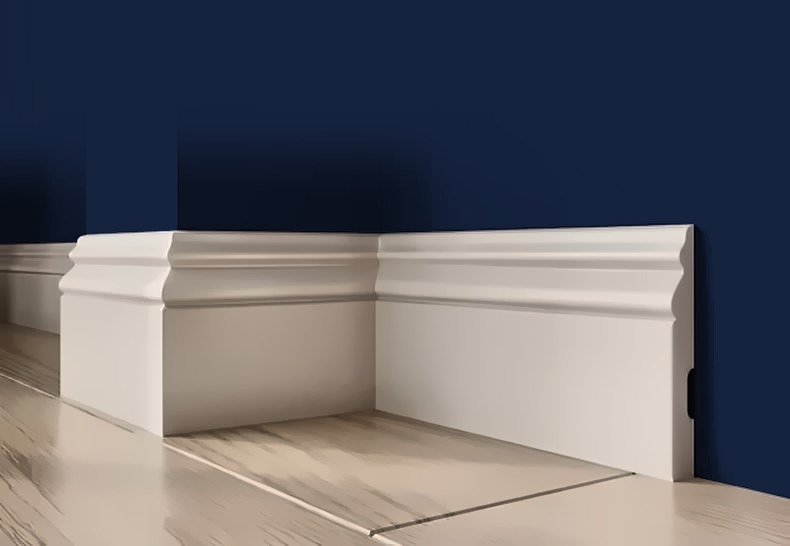

Плинтус напольный белый под покраску 150 мм, ударопрочный влагостойкий, 150×22×2000 мм — A702
высота 150 мм, 150×22×2000 мм, полистирол высокой плотности (дюрополимер), ударопрочный, влагостойкий, под покраску — белый

Профиль (сечение)
Сечение плинтуса в масштабе: высота 150 мм, толщина 22 мм (верх плинтуса слева, стена снизу). Контур снят с каталога производителя.
Характеристики
| Артикул | A702 |
| Тип | Плинтус напольный |
| Ширина | 150 мм |
| Толщина | 22 мм |
| Длина | 2000 мм |
| В коробке | 14 шт |
| Материал | полистирол высокой плотности (дюрополимер) |
| Покрытие | белый грунт, под покраску |
| Производитель | ARTDEC (Казахстан) |
О товаре
A702 — напольный плинтус ARTDEC из полистирола высокой плотности (дюрополимера) под покраску высотой 150 мм, толщина 22 мм, длина 2 м. Плотный, не крошится, не боится влажной уборки; красится в цвет стен, дверей или в контраст.
Монтаж на клей (жидкие гвозди), углы запиливаются под 45°. Сколько нужно: периметр комнаты без дверных проёмов ÷ 2 м, плюс запас 10% на подрезку. В коробке 14 шт.
С этим берут
Что обычно докупают вместе с A702 (плинтус напольный): закрыть торцы панелей на внешнем углу; рамки и панно на соседней стене; стык стены и потолка.


Ещё в разделе «Плинтусы»



Заявка
Ответим с ценой, наличием и сроком в рабочее время. Быстрее всего — написать в чат (кнопка «Чат» внизу справа) или заказать обратный звонок — перезвоним сами.
Оставьте номер — перезвоним в рабочее время, расскажем про наличие, цену и доставку. Укажите в комментарии, когда удобно принять звонок.
Менеджер подтвердит наличие и стоимость доставки и пришлёт ссылку на оплату картой или СБП: предоплата 50% (остаток при получении) или 100%. Самовывоз со склада в СПб — бесплатно.